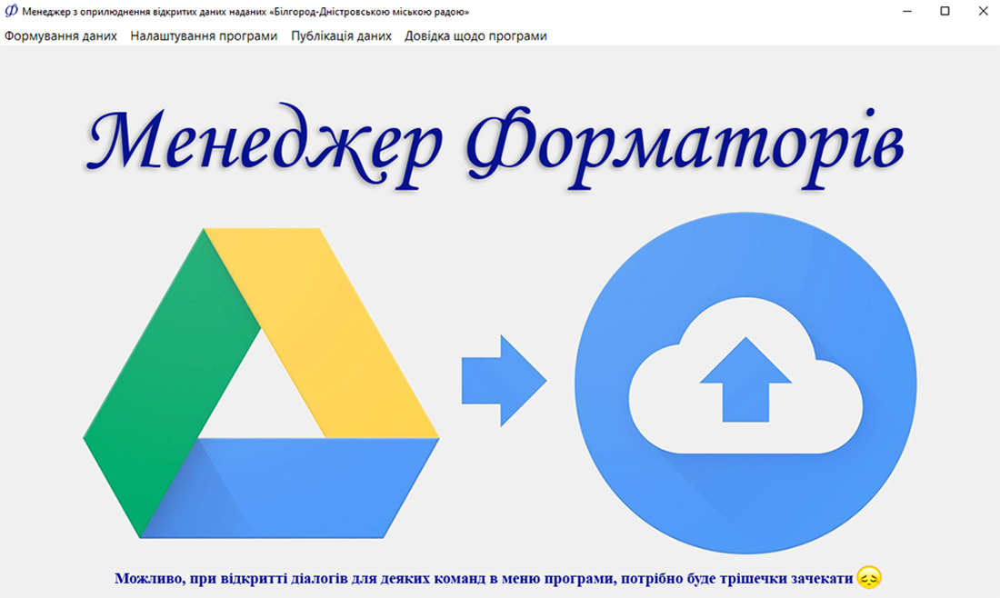
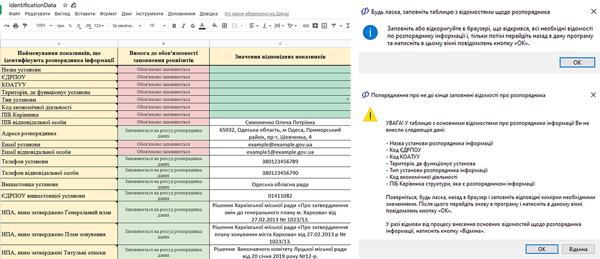
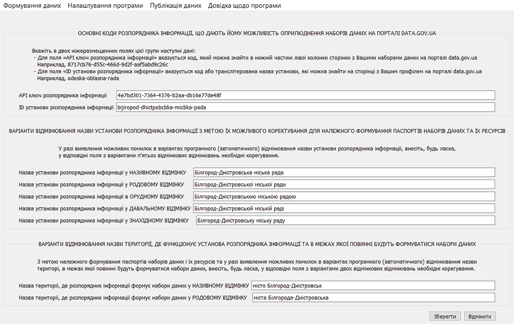
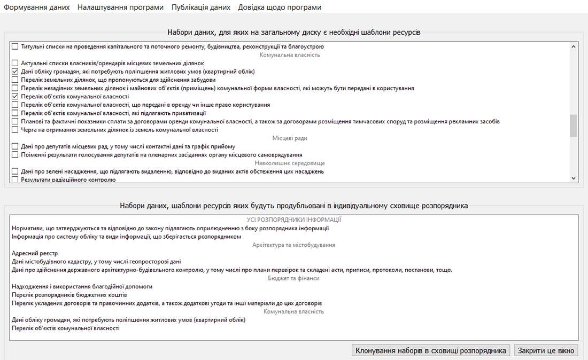
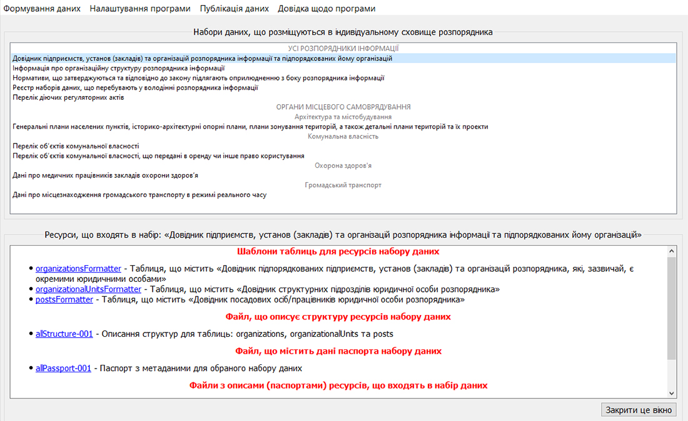
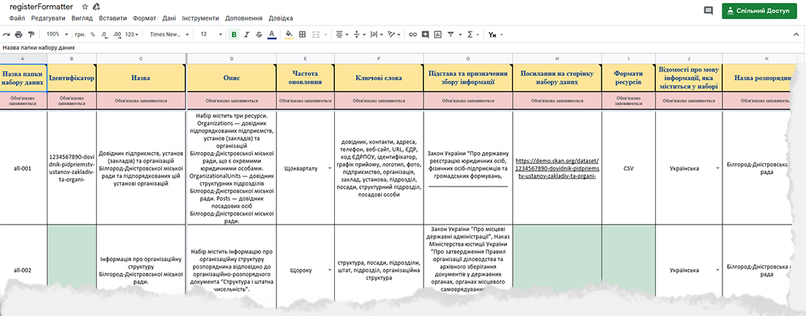
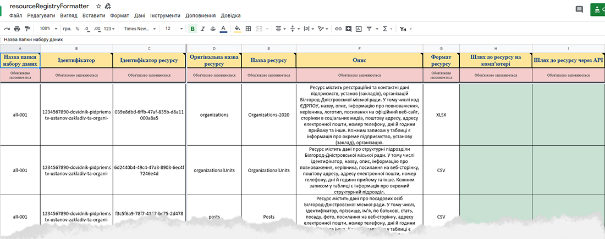

ЗАГАЛЬНІ ВІДОМОСТІ ПРО ПРОГРАМУ
Як вже було зазначено в розділі «Про все, що стосується форматори» цієї довідки, програмний пакет (далі - програма) «Менеджер форматорів» спрямований на максимальну автоматизацію і спрощення роботи розпорядників інформації в сфері формування та оприлюднення відкритих даних.
Програма має віконний графічний інтерфейс з дворівневим меню, перший рівень якого складається з наступних пунктів:
|
|

Малюнок 2.1. Головне вікно програми «Менеджер форматорів»
Послідовність стандартних дій при повсякденному використанні програми
Відразу ж після інсталяції програми на Ваш комп'ютер в меню «Налаштування програми» рекомендується по черзі запустити наступні дві команди:
1. Команду «Загальні відомості по розпоряднику», яка дозволить Вам занести в програму всі необхідні відомості про Вашу структуру, що є безпосереднім розпорядником інформації. Всі ці відомості в подальшому можуть бути використані, як самою програмою при автоматичному формуванні паспортів наборів даних та описів їх ресурсів, так і розробниками ПЗ з метою спрощення створення програмних додатків, що використовують ті чи інші набори даних.

Малюнок 2.2. Приклад вікон та діалогів, які повинні виникати при занесенні в програму загальних відомостей про розпорядника інформації
2. Команду «Відомості для оприлюднення даних», завдяки якій Ви зможете занести в програму Ваші індивідуальні коди для доступу до порталу data.gov.ua, а також інші відомості, які згодом забезпечуватимуть автоматизацію процесу публікації Ваших наборів даних.

Малюнок 2.3. Приклад діалогового вікна програми для занесення в неї відомостей,
які в подальшому забезпечать оприлюднення відкритих даних на відповідному порталі
Потім, після внесення всіх необхідних відомостей за рахунок перелічених вище команд, Ви з загального диска до себе в автоматично надане індивідуальне сховище зможете вже здійснювати клонування заготовок (шаблонів) Форматорів разом з додатковими файлами по всім необхідним Вам стандартним наборам даних. Для цього потрібно скористатися відповідною командою «Експорт шаблонів» в меню «Формування даних».

Малюнок 2.4. Приклад вікна програми, в якому проводиться клонування шаблонів Форматорів та інших файлів із загального диска в індивідуальне сховище розпорядника інформації
Після експортування шаблонів Форматорів та інших файлів необхідних Вам наборів даних можна переходити вже до безпосереднього наповнення та оновлення Форматорів за рахунок відповідної команди в меню «Формування даних». Найймовірніше, робота щодо наповнення та поновлення Форматорів буде займати у Вас до 99% всього часу використання даної програми. В рамках виконання команди «Наповнення або оновлення» Ви зможете модифікувати не тільки Форматори, а й паспорта наборів даних та описи ресурсів, що в них входять. Однак, це доцільно буде робити лише в тому випадку, якщо Вас не влаштовуватимуть ті тексти паспортів та описів ресурсів, які були автоматично сформовані програмою після виконання команд «Формування реєстру наборів даних» та «Формування реєстру ресурсів» в меню «Налаштування програми».

Малюнок 2.5. Приклад вікна програми, завдяки якому здійснюється доступ до будь-якого файлу того чи іншого набору даних з метою його модифікації
Дві перераховані вище команди по формуванню реєстрів можна виконати відразу ж після експортування шаблонів Форматорів для необхідних Вам наборів даних. Це дозволить Вам в рамках команди «Наповнення або оновлення» переглядати вже готові (автоматично сформовані) варіанти паспортів та описів ресурсів для відповідних наборів даних.
Слід пам'ятати, що якщо Вам все ж не сподобалися якісь із варіантів автоматично сформованих паспортів (описів ресурсів) і Ви внесли в ці файли свої зміни, то для того, щоб вони вступили в силу на порталі data.gov.ua, Вам з допомогою відповідних команд слід переформувати реєстр наборів даних (у випадку з паспортами) або реєстр ресурсів (у випадку з описами реєстрів).
Також можна занести всі необхідні зміни відразу в один захід для декількох паспортів наборів даних або для описів декількох ресурсів за допомогою відповідних команд «Редагування реєстру наборів даних» та «Редагування реєстру ресурсів» в меню «Налаштування програми». Але, знову ж таки, для однаковості інформації в реєстрах і в файлах паспортів (описів ресурсів), що розміщуються в наборах даних, після редагування реєстрів, їх бажано переформувати.

Малюнок 2.6. Приклад заповненого реєстру наборів даних, який відкривається за відповідною командою програми в окремому вікні браузера з метою редагування

Малюнок 2.7. Приклад заповненого реєстру ресурсів, який відкривається за відповідною командою програми в окремому вікні браузера для редагування
Після початкового наповнення Форматорів та наведення порядку з паспортами і описами ресурсів в Ваших наборах даних, можна переходити до створення аналогів цих же наборів і їх ресурсів на Єдиному державному порталі. Це робиться за допомогою відповідних команд «Створення наборів даних» і «Публікація ресурсів з форматори» в меню «Публікація даних». Варто відзначити, що дані команди, за винятком дуже рідкісних випадків, виконуються лише єдиний раз. Далі, всі зміни, які вносяться в Форматори, відображаються на порталі для відповідних ресурсів автоматично.
Так же рідко, а можливо і ніколи, Вам може знадобитися оновлювати паспорта та описи ресурсів наборів даних за допомогою відповідних команд «Оновлення паспортів наборів даних» і «Оновлення ресурсів з форматори» в меню «Публікація даних».
На завершення слід зазначити, що програмою передбачена видача близько 30-ти різних інформаційних повідомлень, які дозволять Вам чітко зорієнтуватися в тій чи іншій можливої ситуації. Фактично, завдяки цим повідомленням Ви могли б проігнорувати цю інструкцію (довідку) та відразу ж приступити до використання програми. Але, все ж, для комплексного розуміння можливостей даної програми, краще прочитати і цю інструкцію.